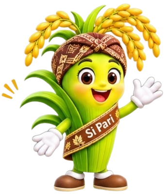
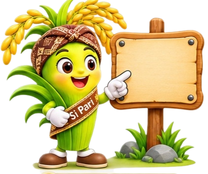
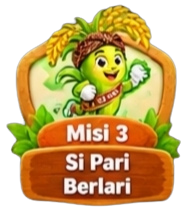
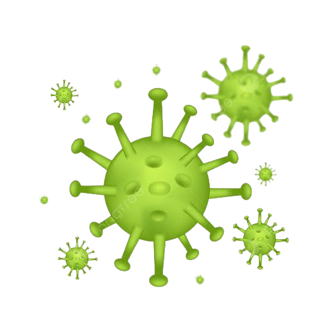
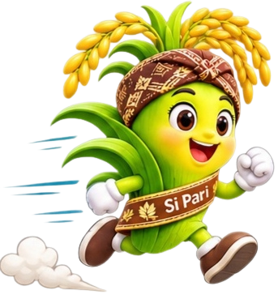

Detektif Ekosistem
Klik komponen biotik dan abiotik sesuai pertanyaan.

Jelajahi persawahan bersama Si Pari! Temukan makhluk hidup, susun rantai makanan, berlari mencari jawaban, dan buat jaring-jaring makanan.
Rekap dapat dilihat bersama. Data bersifat hanya-baca: tidak ada fitur mengedit atau menghapus.
Tekan Perbarui Rekap untuk mengambil nilai terbaru.
| Waktu | Nama siswa | Misi 1 | Misi 2 | Misi 3 | Misi 4 | Total / 100 |
|---|
Nama yang ditampilkan sebaiknya nama panggilan. Hak edit Google Sheets tetap hanya untuk guru.
Siapkan diri, kenali tantangan, lalu jelajahi ekosistem sawah bersama Si Pari!

Klik komponen biotik dan abiotik sesuai pertanyaan.

Seret dan letakkan kartu organisme dalam urutan yang benar.

Gunakan ← → untuk bergerak dan Spasi untuk melompat mengambil jawaban. Kartu yang dilewati tidak mengurangi nyawa.

Hubungkan dua organisme untuk membuat panah. Semua pilihan diterima dahulu; hasil dinilai setelah menekan Periksa Jawaban.
Jawaban benar mendapat 5 poin. Jika salah atau waktu habis, kamu tetap memperoleh penjelasan. Selesaikan 5 soal untuk membuka pos petualangan berikutnya!
Siapa nama penjelajah ekosistem hari ini?
Nama dan skor disimpan sementara di perangkat ini. Setelah semua misi selesai, siswa dapat mengirim hasil ke Google Sheets guru.
Ikuti jalan setapak bersama Si Pari. Selesaikan satu pos untuk membuka pos berikutnya!

Hal apa yang paling menarik dari ekosistem sawah?
Pastikan keempat misi sudah selesai. Tekan tombol berikut untuk mengirim nilai ke rekap guru melalui internet.
Nilai belum dikirim.
Gunakan nama panggilan atau nama depan saja. Jangan masukkan alamat atau nomor telepon.